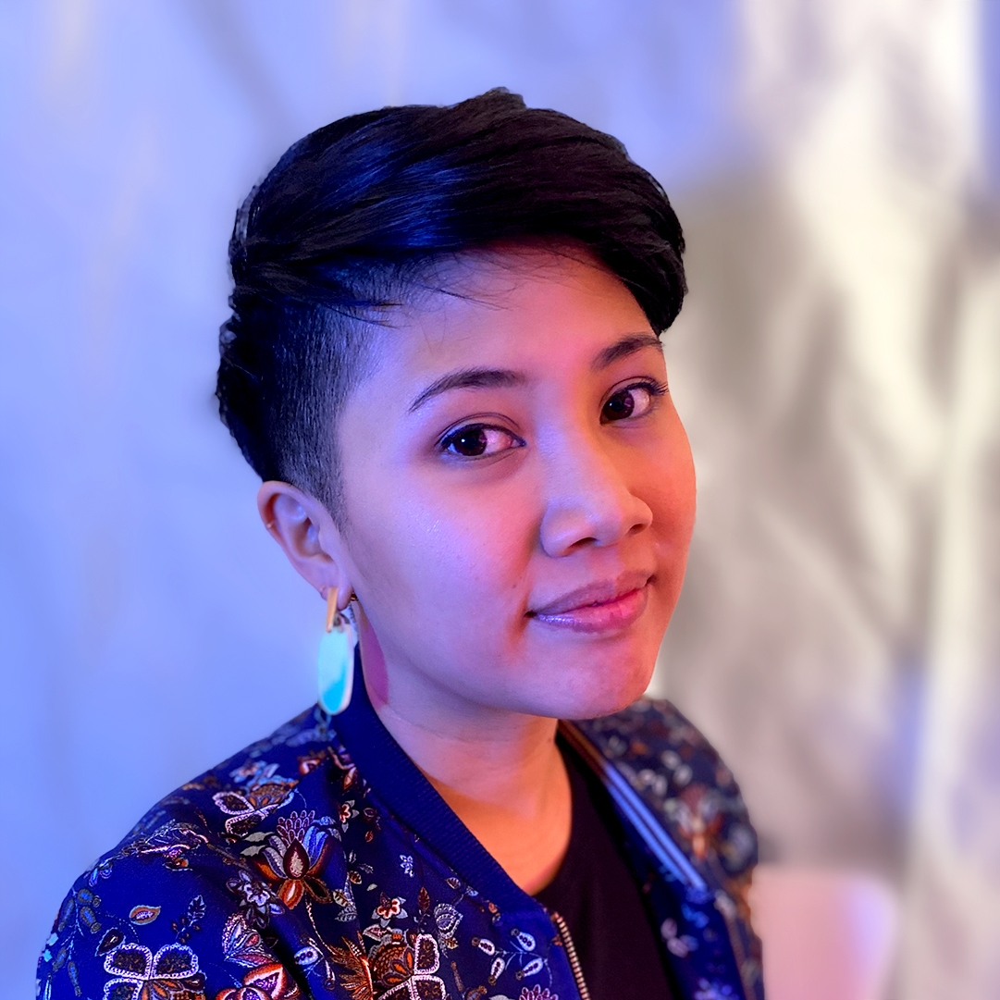

email: christina@cdacanay.com
Hi there. I'm Christina, a designer and artist living in Brooklyn.
Currently I'm working as Design Lead & UX Designer for One More Multiverse, a virtual tabletop role playing game platform.
In the past I’ve been a post-doctoral fellow at NYU, a product designer at an education start up, an art director in children’s book publishing, and an educator. You can find the long, winding version of the professional story here.
In my personal work I sometimes try to examine how we can create a healthy social fabric on the web. Other times I make small, peaceful experiences for myself and others.
Most of my favorite things have been made with other people. Let’s make something together.